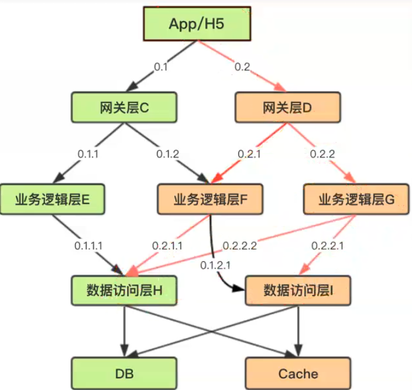

分布式请求跟踪系统设计与实践
微服务现状：
1、某个核心服务挂了，导致上游出现大量报警，如何快速确定哪个服务出了问题？
2、某个核心服务挂了，导致大量报错，如何快速确定哪里出了问题？
3、应用程序有性能瓶颈，如何确定瓶颈在哪里？
4、App端请求响应延迟高，怎样确定是由哪些服务导致的？
5、线上发布了服务，怎么知道它一切正常，比如发布8台服务器，如何直观了解是否有请求进来，访问一切正常？
分布式请求跟踪系统。
开源分布式请求跟踪系统
2014年4月Google论文《Depper, a Large-Scale Distributed Systems Tracing Infrastructure》
1、阿里鹰眼（EagleEye），闭源
2、大众点评CAT，开源
3、京东Hydra，开源
4、Pinpoint，APM（Application Performance Management），开源（韩国NAVER），数据存储在HBase
5、Apache SkyWalking，由国内开源爱好者吴晟（原OneAPM工程师，目前在华为）开源并提交到Apache孵化器的产品，存储支持ES，MySQL，TiDB
如果数据量大推荐用Pinpoint，但需要维护HBase集群，如果数据量小可采用SkyWalking。
设计需求
1、基于日志的分布式请求跟踪系统
业务侵入小；将每个系统分散的日志聚合在一起，并进行海量日志分析，从而生成有价值的数据
2、核心---调用链
每次请求都生成一个全局唯一的ID（TraceId），通过它将不同系统的日志串在一起，重组成条用链；
开发人员通过分布式请求系统跟踪排查问题；
也可以对多个请求进行统计和分析。
设计目标
1、低侵入性：作为非业务组件，尽可能少侵入或者无侵入其它业务系统，对于使用方透明，减少业务开发人员的负担
2、灵活的应用策略：使用方可以根据需求，自定义收集数据的范围和粒度（哪些需要收集及采样率）
3、时效性：从数据产生到收集，到数据的分析和处理，再到最终的页面展示，尽可能快
4、决策支持：分析数据可以在决策支持层面发挥作用
5、可视化：使用场景友好的用户视角，丰富的展示方式，可读性高
使用场景
一、调用链跟踪
一次请求调用过程的展示，以图形化的方式梳理出各个微服务集群之间的调用关系，并记录整个调用过程的耗时情况（整体耗时及各步骤耗时），协助开发人员分析整个系统的瓶颈点与热点，从而优化系统。
二、调用链路分析
对多个调用链路进行分析，整理出集群之间的调用关系，计算出整个调用链路的关键节点、直接依赖、间接依赖、依赖强度等。调用拓扑。
三、调用来源分析
针对某一特定集群，整理出其他集群对其的调用情况，防止错误调用的情况发生。
知道拓扑后对业务的回归测试非常有帮助，可以实现精准化测试。
四、调用量分析
实时统计各个集群的调用次数、QPS、平均耗时、最大耗时等信息，开发人员可根据相关信息进行容量规划
五、监控请求调用量
开发人员通过自定义正则表达式，对匹配该正则URL的请求进行实时监控，包括调用次数、QPS、平均耗时、最大耗时、最小耗时等
整体架构
1、埋点和生成日志：Java探针（-javaagent技术）通过本地socket将收集到的数据实时发送给本机上的日志收集节点agent，本地的日志收集agent将本机上多个Java探针的日志数据发送到日志收集服务集群
2、收集和存储日志：日志收集服务器集群对数据进行格式化处理后，分成三个工作流进行后续处理
3、汇总和重组调用链
4、分析和统计调用链
a）原始数据直接存入到Elasticsearch集群中，用于页面实时调用链路的展示
b）原始数据存入本地日志中，通过Flume上传到HDFS集群中，利用Hadoop集群定时的进行离线分析，分析后的结果存入到Elasticsearch集群中，用于页面数据分析的展示
c）原始数据发送到Spark/Flink在线分析集群，进行QPS、平均耗时等实时数据统计、分别将统计结果保存到Redis集群与Elasticsearch集群中，用于页面实时数据统计的展示
埋点和日志生成
